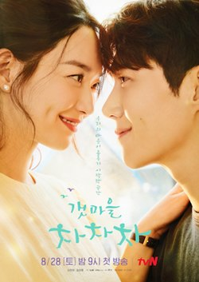
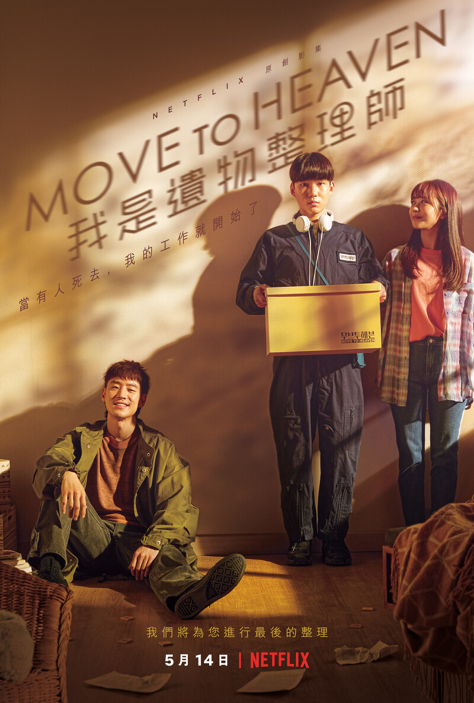

韓劇推薦
韓劇推薦
韓劇推薦
1. 無法抗拒的他
2. 海岸村恰恰恰
3. 現正分手中
4. 我是遺物整理師
5. 以吾之名
1. 無法抗拒的他
由宋江、韓韶禧主演的《無法抗拒的他》，改編自同名網絡漫畫，於2021年6月19日至8月21日播放。
故事講述一名原本被初戀傷透了心的女大生，原本已經不再相信愛情，但卻偏偏再度愛上校內的花花
公子男同學。雖然劇中男、女主角有不少大尺度的吻戲和床戲，但韓國觀眾似乎沒有太大的興趣，
收視持續低迷。不過，此劇在Netflix的反應卻非常不錯，在播放期間經常登上TOP 10排行榜。
2. 海岸村恰恰恰
《海岸村恰恰恰》講述的是ㄧ段關於人成長故事，綜觀看來劇中所有人物都用不同的方式佔據篇幅，
立體的情感、流暢的敘事加上觸發省思的事件，每個觀眾都能藉著本劇找到生命中不同時期的共感，
不管是面對親情、友情、愛情，甚至是正在前行的人生道路，透過角色的台詞，如醍醐灌頂般，
都寫成自己的人生格言。

簡單的菁英返鄉故事，劇情芭樂老套卻有用！讓好多觀眾一開始看得開心、
後來哭紅了眼的《海岸村恰恰恰》戲裡戲外都精彩！來自都市、充滿正義感
但為了生存卻又不得不自私自利的漂亮女牙醫，下鄉遇上帥氣萬事通男主，
從此改變人生的愛情故事純樸亮麗又好看，在近年韓劇頻頻走暗黑路線、
大談嚴肅社會議題之際，《海岸村恰恰恰》成為清流，和觀眾只是好好過生活、
好好談戀愛，金宣虎與申敏兒也爆紅。
3. 現正分手中
堪稱年度顏值最高韓劇組合！由宋慧喬、張基龍主演的愛情偶像劇《現正分手中》
主打姐弟戀，讓32歲的時尚攝影師與38歲的時尚設計師談戀愛，兩人先是在時裝周
派對上發生一夜情、再重逢確定愛情的悸動是真不是假，兩人陷入戀情。最新劇情為
宋慧喬在不知情的狀況之下曾經當過張基龍哥哥的小三，但依然無損兩人感情，
並決定一起攜手迎接生命帶來的考驗。

4. 我是遺物整理師
相信在台灣的大家，疫情爆發期間都有被《我是遺物整理師》給療癒到。
患有亞斯伯格症候群的男主角韓可魯在父親過世以後，遇上了李帝勳飾演的叔叔，
兩人開始相依為命、一起經營「天堂移居」遺物整理公司，專門清理死亡現場的可魯，
超強記憶能幫助死者留下生前最珍貴的遺物、甚至成為謀殺案破案線索！
《我是遺物整理師》題材卓越，值得一看！

5. 以吾之名
2021年度入榜兩部作品的女演員就是韓韶禧！韓韶禧在《無法抗拒的他》裡面演藝術系的美女學生、
一轉頭到《以吾之名》就演很能打的休學女高生！《以吾之名》以大女主之姿細述女孩的復仇之路，
韓韶禧不但演戲吸睛、戲路也是又寬又大，被譽為「小宋慧喬」的韓韶禧未來一片光明，
大家不妨從現在就開始蒐集追完女神作品，以免日後趕不上她演的一齣又一齣好戲！
作為一部黑色電影類型的韓劇，《以吾之名》把故事聚焦在智友成為
一位緝毒組警員之後，一邊跟著小隊查緝販毒集團，一邊暗中向組織
提供情報，並調查出自己父親被殺害真相的過程之上，整部作品情節曲折、
節奏快速緊湊，透過具有濃厚黑幫色彩的警匪犯罪故事，在營造出強
烈的懸疑驚悚感之餘，也帶出每位角色的動機與人性。